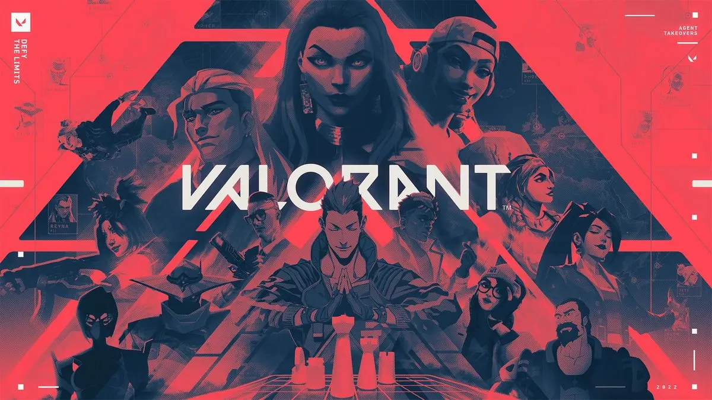

コスパ重視迷ったらこれ
FHD 144fps以上
描画性能スコア（GPU GUIDE）46
Riot公式の144fps向けスペック（Core i5-9400F / GTX 1050 Ti）を余裕を持って上回る入門構成。VALORANTだけなら、これ以上のGPUはほぼ不要です。

FPSPC負荷：軽い
VALORANTはとても軽いゲームで、Riot公式の「144fps向け」スペックでもGTX 1050 Ti級です。144fpsならエントリークラスのPCで十分。240fps以上を狙うときはGPUではなくCPUが限界になりやすいので、高額なGPUに予算を使う必要はありません。
QUICK ANSWER
OFFICIAL SPEC
ゲームの公式情報に掲載されている動作環境です（2026年10月18日確認）。「最低」は起動して遊べる下限、「推奨」は標準的な画質で遊ぶ目安で、高画質・高fpsを保証するものではありません。公式に記載のない項目は「記載なし」としています。
| 項目 | 最低（30fps） | 推奨（60fps） | 高性能（144fps） |
|---|---|---|---|
| OS | Windows 10（ビルド19041以降）64bit / Windows 11 64bit | 同左 | 同左 |
| CPU | Intel Core i3-540 / AMD Athlon 200GE | Intel Core i3-4150 / AMD Ryzen 3 1200 | Intel Core i5-9400F / AMD Ryzen 5 2600X |
| GPU | Intel HD 4000 / AMD Radeon R5 220 | NVIDIA GeForce GT 730 / AMD Radeon R7 240 | NVIDIA GTX 1050 Ti / AMD Radeon R7 370 / Intel Arc A310 |
| VRAM | 1GB以上（専用GPUの場合） | 1GB以上（専用GPUの場合） | 1GB以上（専用GPUの場合） |
| メモリ | 4GB | 4GB | 4GB |
| ストレージ | 記載なし | 記載なし | 記載なし |
| その他 | SSE 4.2またはAVX対応CPU、DirectX 11対応。ARMは非対応 | 同左 | 同左 |
Windows 11ではTPM 2.0とUEFIセキュアブートの有効化が必要です。クラウドゲーミングや仮想マシンでは遊べません。
SIPPO PICK
ここからは公式スペックではなく、Sippoが快適さと予算のバランスで選んだ構成です。fpsは画質設定や場面で大きく変わるため、実測していない数値は載せていません。
コスパ重視迷ったらこれ
Riot公式の144fps向けスペック（Core i5-9400F / GTX 1050 Ti）を余裕を持って上回る入門構成。VALORANTだけなら、これ以上のGPUはほぼ不要です。
240Hz競技向け
240Hz以上のモニターを使う人向け。VALORANTの高fps域はCPUで頭打ちになりやすいので、GPUではなくCPUを強くしています。
予算はBTOの完成品（Windows付き）を想定した2026年10月時点の目安です。2026年はメモリとSSDの値上がりで価格が動きやすく、セールや構成の違いで数万円変わります。「推定」の付いた価格帯は、同じ構成の販売例を確認できず、近い構成の価格から推定した目安です。描画性能スコアはGPU GUIDEの数値で、DLSSなどの機能を除いた描画性能の相対値です（fpsではありません）。AMDの欄は、同じ価格帯で選べるRadeonの候補です。PC BUILD CHECKの参考価格も同じくBTO完成品の目安ですが、パーツごとの価格から計算した概算で、価格を確認した時期も違うため、このページの目安より低く出ることがあります。
RESOLUTION
解像度ごとのGPUの目安です。実測ベンチマークではなく、公式スペックとGPU同士の性能差から整理したSippoの目安です。
| 解像度 | GPUの目安 | 狙える目標 | 補足 |
|---|---|---|---|
| FHD | RTX 5050 / RX 7600 | 144fps以上 | Riot公式の144fps向けスペックを大きく上回ります。240fps以上を狙うならCPUを強化します。 |
| WQHD | RTX 5060 / RX 9060 XT | 144〜240fps | VALORANTは軽いのでWQHDでも高fpsを保ちやすいですが、競技シーンではFHDが主流です。 |
| 4K | RTX 5060 Ti 以上 | 画質重視 | 見た目は綺麗になりますが、VALORANTで4Kにするメリットは小さめです。 |
画質設定・アップスケーリング：設定を下げればGPUの負担はごくわずかになるタイトルです。高fps域ではCPUとメモリ、そしてモニターのリフレッシュレートが体感を決めます。
GAME POINTS
Riot公式の144fps向けスペックはGTX 1050 Ti。現行のRTX 5050クラスでも十分すぎる性能です。予算に余裕があるなら、GPUよりも240Hzモニターやマウスに回した方が満足度は高くなりやすいです。
fpsが200を超えるような領域では、GPUより先にCPUの処理が限界になります。240Hz・360Hzモニターを活かしたい人は、Ryzen 7 7800X3Dのようなゲームに強いCPUを選ぶと効果的です。
アンチチートの関係で、Windows 11ではTPM 2.0とUEFIセキュアブートの有効化が求められます。最近のBTOパソコンなら通常は有効ですが、自作PCや古いPCでは設定を確認しましょう。
FAQ
Riot公式の最低スペックはIntel HD 4000で30fps、推奨はGT 730で60fpsとかなり低めです。ただし撃ち合いで有利になる144fpsを狙うなら、GTX 1050 Ti以上のゲーミング向けGPUが目安です。
VALORANTだけが目的なら必要ありません。RTX 5050〜5060クラスで144fps以上を十分狙えます。RTX 5070はほかの重いゲームも高画質で遊びたい人向けです。
VALORANTの高fps域はCPUが限界になりやすいので、まずCPUの使用率と性能を確認してください。GPU使用率が低いままfpsが伸びないなら、GPUを交換しても改善しにくく、CPUの交換やPCの買い替えが必要です。
Riot公式の記載は4GBですが、Windowsやボイスチャットを同時に使うことを考えると16GBが現実的です。配信もするなら32GBあると安心です。
RELATED GAMES
このページの最終更新： ／ 公式スペックの確認：2026年10月18日 ／ 価格の確認：2026年10月18日